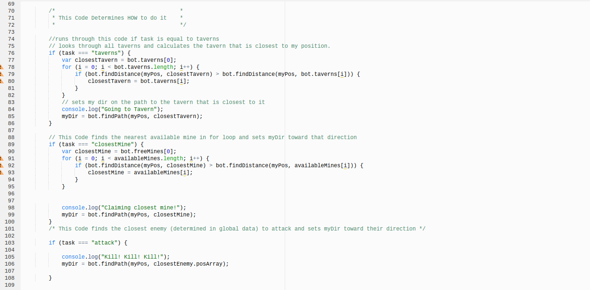
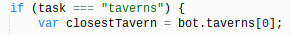
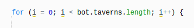
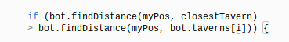
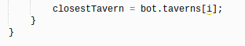
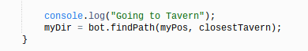
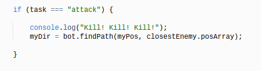
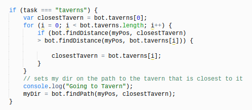
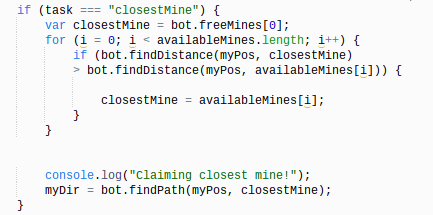

Telling Chris-bot HOW to do it
In the previous page, we set our task to different terms based on the condition of our bot. Here we need to refer to that specifc name so that we can tell Chris-bot how to carry out that action. First, we have to set up an if statement with a conditiion that checks if task is equal to taverns using the operator "===". Next, for our codeblock, we want to tell Chris-bot to only go to the closest tavern in its area in order to be more efficient with the number of moves it has. Thus, we will first create the a variable that will hold information on the closest tavern to Chris-bot. We will set that variable equal to the first index of the array bot.taverns, which holds all the information on all the positions of the taverns in the arena. Your if statement and variable should look like this:
Next, we have to create a for loop that will go through each of taverns in the arena, so that we can find the tavern that is closest to Chris-bot. In our first statement, we will set "i"--the initial element of the array--to 0, to indicate to the program that it has start looping through the array at the first index of the array. Then, in our second statement we will have to tell the program to run the loop all the time. Thus, we will set it to when our index is less that the total number of elements in the array "bot.taverns, which will always be true. Finally, for our third statement we wil tell our program to go through every element of the array so that we make sure that Chris-bot is going to the closest tavern. We can do this by stating "i++". Your for loop should end up looking like this:
Then, in order to find the closest tavern to us, we have to compare the different taverns in the array to each other in terms of position. Thus, we can use an if statement to compare two of these taverns together. Once you create your if statement, within your condition we are going to identify the distance (using bot.findDistance) between Chris-bot (myPos) and the variable "closestTavern" which we established stored information in the first index of the bot.taverns array. Then, we will check to see if this distance is greater than (using the ">" operator) the distance between Chris-bot and every other element of the bot.taverns array. Your if statement condition should look like this:
Notice that in the second part of our comparison, "[i]" is attached to the end of bot.taverns. The "i" within the brackets ensures that our program will go through each index and compare it the first index of the array.
If our condition is true, and the distance between Chris-bot and the first index of the taverns array is greater that the distance between Chris-bot and the next index of the array, we have to redefine what our variable closestTavern is equal to. Then, in our codeblock, we will reset closestTavern to equal bot.taverns[i]--the index that is now the closest tavern to Chris-bot. On the other hand, if the condition is false, the codeblock will not be carried out and closestTavern will remain as the first index of the taverns array. Your new variable should look like this:
Finally, we need to set Chrisbot on the path to whatever we have defined as the closest taverns. We can do this using "myDir" and setting it equal to bot.findPath(myPos, closestTavern), which is translated to finding a path between my position and the position of the closestTavern according to what we found through our for loop. Your code should look like this:
Here we need to tell Chris-bot how to attack our closest enemy. First, we have to create another if statement where we will check to see if task is equal to "attack" according to our the last section Telling Chris-bot What To Do. Our next step would be defining who our closest enemy is, however, we already stated this in our global data! So we will not have to redefine it here. We will still have to tell Chris-bot what path it has to take to get to its closest enemy. We can do this using the same format as the last part of the previous section above. Thus, we will then set "myDir" equal bot.findPath(myPos, closestEnemy.posArray), also translating to find the path between my position and the position of my closest enemy, and set Chris-bot on that path. This part of your code should look like this:
Here we need to tell Chris-bot which is the closest mine and tell it to go in that direction to claim it. This function is dependent on the algorithm of defining which object is closest to Chris-bot, which is the same algorithm we used to find which tavern is closest to us. Thus, we can take the shortcut of copy and pasting all the code we have in our first section for finding the closest tavern. However, there are still some slight changes in the names of variables and arrays that we have to refer to. First, in the condition of our initial if statement, we need to change the program to check if task equals "closestMine." To make things simpler, here is a "code" for the names you will have to change:
closestTavern --> closestMine [0]
bot.taverns[0] --> bot.freeMines [0]
bot.taverns.length --> availableMines.length
We have to refer to availableMines because this is the array that holds all the mines in the arena.
bot.taverns[i] --> availableMines[i]
Here is a side to side comparison between the code for how to go to the closest tavern and closest mine:
 